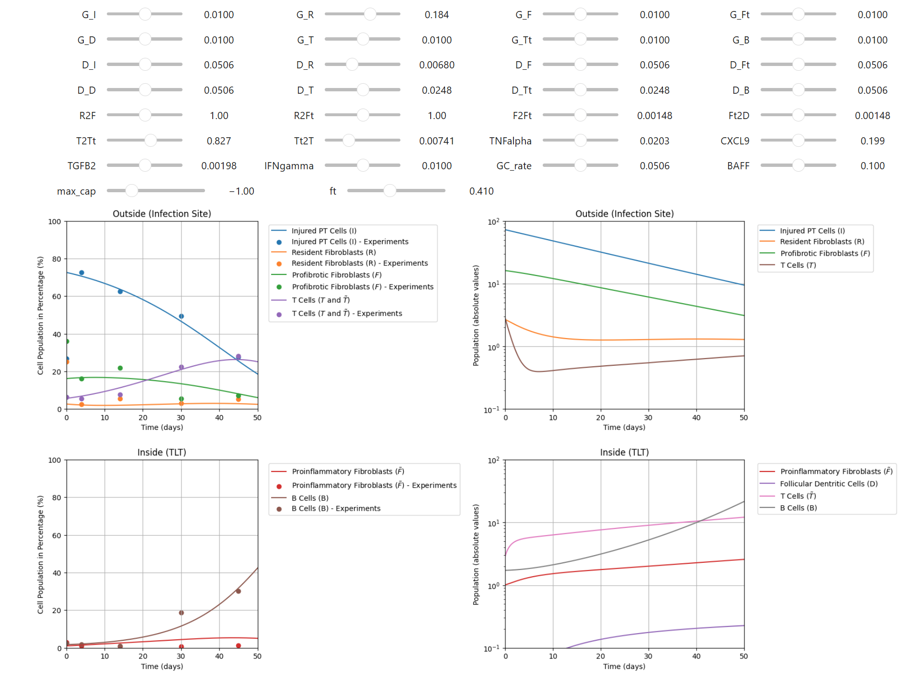

🧮 On the road of clean parameter estimation
I recently gave a lecture on parameter estimation. While we covered some material and in the end people learned how to use Julia, it left me unsatisfied. In this and the following blog posts I want to document my journey in studying parameter estimation more deeply.
The usual approach
Modelling in biology often leads to models with some known parameters and many unknown factors. It has been like this for ages, and somehow people are able to still find good parameters.
The automated techniques are quite established at this point:
- Implement your model to allow fast simulations and automatic differentiation.
- Pick either
- Optimisation-based parameter estimation,
- Bayesian inference.
- Define a cost function.
- Define bounds or prior distribtuions to your unknown parameters.
- Click optimize or infer and pray.
There seem to be subtlties such as how to compute the derivatives (forward-sensitivities for small models or lazy people or adjoint-sensitivities for large problems), but the overall outline is faily simple.
The usual shortcoming: Easy in simple cases, hard in real life?
However, the practice of it seems much less satisfying. Many online tutorials take the Lotka-Volterra predetor-prey model as an example, where a simple cost function gives satisfying results:

Figure: Example parameter fitting using an
But this is just an ODE model with 4 parameters and 2 unknowns. It hardly represents any real setting.
For example, in my current project with Seirin-Lee and Jinghao Chen, we face a model with 7 equations, over 20 unknowns and as little data as 4 time points with 6 values each.

Figure: Example of our simulations and some preliminary fitting.
Finding all parameters automatically was not possible so far, which makes me question if I really know the tools well?
Next steps: Never stop learning!
To tackle this issue, I decided that I need to study more existing examples. Here is my reading list for the next weeks:
- PEtab – a data format for specifying parameter estimation problems in systems biology
- It seems great that this initiative exists to exchange tools and techniques. See also PEtab.jl.
- Benchmarking-Initiative/Benchmark-Models-PEtab
- This is the first resource I found with extensive and non-trivial fitting benchmarks! I should train with these models.
- SMBLToolkit.jl
- Always good to know how to load other people's models.
I hope that this study will help me to improve my lecture material: Parameter Estimation for Differential Equations with Julia! 🚧